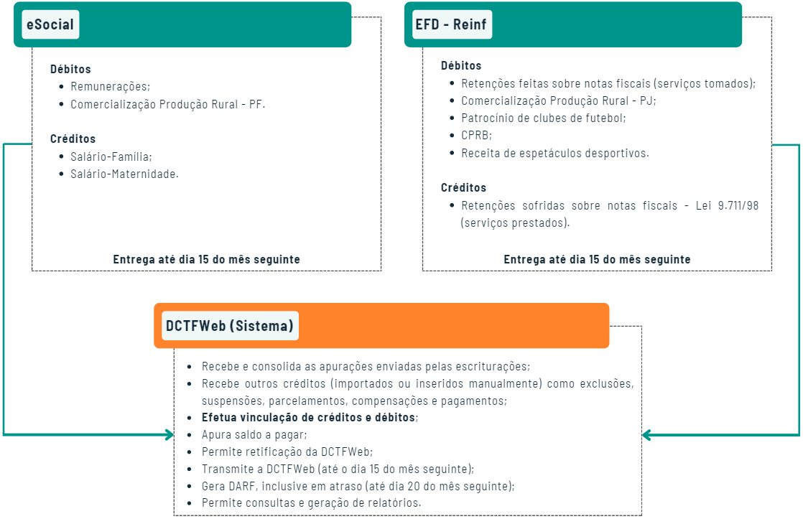

Saiba tudo sobre a DCTFWeb
Texto atualizado em 01/2025.
A DCTFWeb - Declaração de Débitos e Créditos Tributários Federais Previdenciários e de Outras Entidades e Fundos, é uma obrigação tributária acessória, em que a contribuinte confessa dívidas, constituições do crédito previdenciário e contribuições destinadas a terceiros. Por meio da DCTFWeb será possível editar a declaração, transmiti-la e gerar o DARF de pagamento.
A apuração dos tributos será feita automaticamente e totalmente integrado com os sistemas de cobrança da Receita Federal do Brasil, a partir das informações prestadas no eSocial e na EFD Reinf. A declaração deverá ser única por empresa, entregue pela matriz e assinada digitalmente.

A Instrução Normativa RFB nº 2.237/2024 simplificou a forma como as empresas declaram seus débitos tributários federais. A partir de 1º de janeiro de 2025, a DCTF e a DCTFWeb foram unificadas em uma única declaração: a DCTFWeb.
Todas as informações sobre os débitos, sejam eles referentes a fatos geradores ocorridos a partir de 1º de janeiro de 2025 ou antes desta data, deverão ser prestadas através do MIT - Módulo de Inclusão de Tributos, da DCTFWeb.
Nesta página, você verá os seguintes conteúdos:
- ➤ Conceito
- ➤ Obrigatoriedade
- ➤ Cronograma
- ➤ Prazos de entrega
- ➤ Sem movimento
- ➤ Tributos a serem informados
- ➤ Créditos vinculáveis
- ➤Classificação da DCTFWeb
- ➤O que muda em relação a GFIP
- ➤ Multas
- ➤ MIT - Módulo de Inclusão de Tributos
- ➤ Perguntas e Respostas
- ➤ Uso do sistema DCTFWeb
- ➤ Notícias Relacionadas
- ➤ Webinars
Obrigatoriedade
Conforme o artigo 4º da IN RFB nº 2005/2021, a entrega da declaração é obrigatória nas seguintes para:
- Pessoas jurídicas de direito privado em geral e as equiparadas a empresa;
- Unidades gestoras de orçamento;
- Consórcios de que tratam os artigos 278 e 279 da Lei n° 6.404/76, quando realizarem, em nome próprio, como a contratação de trabalhador segurado do Regime Geral de Previdência Social (RGPS); a aquisição de produção rural de produtor rural pessoa física; o patrocínio de equipe de futebol profissional; ou a contratação de empresa para prestação de serviço sujeito à retenção previdenciária
- Sociedades em Conta de Participação;
- Entidades federais e regionais de fiscalização do exercício profissional, inclusive a Ordem dos Advogados do Brasil (OAB);
- Organismos oficiais internacionais ou estrangeiros em funcionamento no Brasil, quando contratarem trabalhador segurado do RGPS;
- Microempreendedores individuais, quando contratarem trabalhador segurado do RGPS; adquirirem produção rural de produtor rural pessoa física; patrocinarem equipe de futebol profissional; ou contratarem empresa para prestação de serviço sujeito à retenção previdenciária
- Produtores rurais pessoas físicas, quando contratarem trabalhador segurado do RGPS; ou venderem sua produção a adquirente domiciliado no exterior, a outro produtor rural pessoa física, a segurado especial ou a consumidor pessoa física, no varejo;
- Pessoas físicas que adquirirem produtos rurais de produtor rural pessoa física ou de segurado especial para venda, no varejo, a consumidor pessoa física; e
- Demais pessoas jurídicas que estejam obrigadas pela legislação ao recolhimento das contribuições previdenciárias a que se refere o artigo 13 da IN RFB n° 2.005/2021.
Cronograma de adequação

- Grupo 1 - Agosto de 2018: entidades empresariais com faturamento no ano de 2016 superior a R$ 78.000.000,00.
- Grupo 2 - Abril de 2019: entidades empresariais com faturamento no ano de 2017 acima de R$ 4.800.000,00.
- Grupo 3 - Outubro de 2021: empregadores com faturamento inferior a R$ 4.800.000,00. Optantes pelo Simples Nacional, MEI, Produtores Rurais Pessoa Física, Empregadores Pessoa Física com exceção dos domésticos, e entidades isentas.
- Grupo 4 - Outubro de 2022: entes da Administração Pública, Organizações Internacionais e outras Instituições Extraterritoriais.
Prazos de Entrega
Mensal: Até o último dia útil do mês seguinte ao da ocorrência dos fatos geradores. Saiba mais.
Anual: Até o dia 20 do mês de dezembro ou dia útil posterior. Para as informações relativas ao 13º salário.
Diário: Até o 2º dia útil após a realização do evento. Para eventos desportivos, pela entidade promotora do espetáculo. (quando houver mais de um evento desportivo no mesmo dia, as informações deverão ser agrupadas na mesma DCTFWeb diária).
Aferição de Obras: Até o último dia do mês em que realizar a aferição da obra, por meio do (SERO). Transmitida pelo responsável por obra de construção civil
Reclamatória Trabalhista: Até o dia 25 do mês seguinte ao do fato gerador. Prestação de informações relativas aos tributos decorrentes de ações judiciais perante a justiça do trabalho.
Sem Movimento
Nos períodos de apuração em que não ocorram fatos geradores sujeitos à declaração, a DCTFWeb deverá ser gerada com o indicativo 'sem movimento', mediante o preenchimento e a transmissão dos eventos periódicos de encerramento das escriturações digitais.
Tributos a serem informados
A Instrução Normativa RFB nº 2.237/2024 estabelece que, a partir de 1º de janeiro de 2025, a Declaração de Débitos e Créditos Tributários Federais (DCTFWeb) deverá ser utilizada para informar todos os fatos geradores relativos aos tributos administrados pela Receita Federal relacionados a seguir:
- IRPJ - Imposto sobre a Renda da Pessoa Jurídica;
- IRRF - Imposto sobre a Renda Retido na Fonte;
- IPI - Imposto sobre Produtos Industrializados;
- IOF - Imposto sobre Operações de Crédito, Câmbio e Seguro, ou relativas a Títulos ou Valores Mobiliários;
- CSLL - Contribuição Social sobre o Lucro Líquido;
- PIS/Pasep - Programa de Integração Social e Programa de Formação do Patrimônio do Servidor Público;
- COFINS - Contribuição para o Financiamento da Seguridade Social;
- Cide Combustíveis - Contribuição de Intervenção no Domínio Econômico incidente sobre a importação e a comercialização de petróleo e seus derivados, gás natural e seus derivados e álcool etílico combustível.
- Cide-Remessas - Contribuição de Intervenção no Domínio Econômico destinada a financiar o Programa de Estímulo à Interação Universidade-Empresa para o Apoio à Inovação.
- Condecine - Contribuição para o Desenvolvimento da Indústria Cinematográfica Nacional;
- Contribuição social incidente sobre a modalidade lotérica denominada aposta de quota fixa.
- CPSS - Contribuição para o Plano de Seguridade Social do Servidor.
- Contribuições previdenciárias previstas no art. 11, parágrafo único, alíneas "a" e "c", da Lei nº 8.212/1991;
- Contribuições previdenciárias instituídas em substituição às contribuições incidentes sobre a folha de pagamento, inclusive a Contribuição Previdenciária sobre a Receita Bruta (CPRB) de que trata a Lei nº 12.546/2011; e
- Contribuições sociais destinadas, por lei, a terceiros.
As microempresas e as empresas de pequeno porte optantes pelo Simples Nacional não devem informar os valores relativos aos tributos federais apurados pelo PGDAS-D.
Créditos vinculáveis
Recepciona créditos informados no eSocial e EFD Reinf para aproveitamento junto aos débitos.
Classe 1 - Deduções
| Tipo | Origem |
|---|---|
| Salário família | eSocial |
| Salário maternidade | |
| Retenção Lei 9.711/98 | EFD-Reinf |
| Adiantamento de retenção | Manualmente |
Classe 2 - Créditos (outros créditos)
| Tipo | Origem |
|---|---|
| Exclusão |
Importado RFB Inserido manualmente |
| Suspensão |
eSocial (*) EFD-Reinf (*) Inserido manualmente (**) |
| Parcelamento |
Importado RFB Inserido manualmente |
| Compensação |
Importado RFB Inserido manualmente |
(*) Apesar de importado do eSocial e EFD-Reinf, a vinculação do crédito de Suspensão é feita manualmente. (**) Permitido apenas para alguns códigos de receita específicos.
Classe 3 - Pagamento
| Tipo |
|---|
| Créditos decorrentes das guias de pagamento quitadas. Utilizado apenas no caso de retificação da DCTFWeb. |
Os créditos importados do e-Social ou da EFD-Reinf não são passíveis de edição na DCTFWeb.
Classificação da DCTFWeb
Categorias
| Categoria | Definição |
|---|---|
| Geral | DCTFWeb Mensal |
| 13º salário | DCTFWeb Anual – relativa à Gratificação Natalina |
| Espetáculo desportivo | DCTFWeb Diária – relativa a evento desportivo de equipe de futebol profissional |
Situações
| Categoria | Definição |
|---|---|
| Em andamento | Declaração ainda não transmitida, passível de edição |
| Ativa | Declaração transmitida, tratada pela RFB e válida |
| Retificada | Declaração alterada pela entrega de declaração retificadora |
| Excluída | Declaração excluída pela entrega de uma declaração de exclusão |
| Indevida | Declaração excluída mediante procedimento de ofício da RFB |
Tipos
| Categoria | Definição |
|---|---|
| Original | Primeira declaração entregue para um determinado Período de apuração/categoria |
| Retificadora | Declaração que substitui outra declaração entregue |
| Exclusão | Declaração que exclui outra declaração entregue. Não aplicável às categorias Geral e 13º Salário |
Ainda em relação aos tipos, a DCTFWeb original ou retificadora pode ser:
| Situação | Definição |
|---|---|
| Com débitos | Declaração que confessa ao menos um débito, ainda que resulte em DCTFWeb sem saldo a pagar |
| Zerada | Declaração em que não são confessados débitos (zero na coluna Débito Apurado), mas houve movimento. Pode conter créditos |
| Sem movimento | Declaração entregue para informar a ausência de fatos geradores |
O que muda em relação a GFIP?
As informações são basicamente as mesmas da antiga GFIP, porém mais detalhadas e processadas de forma automática por meio do eSocial e da EFD-Reinf:
- INSS Patronal das pessoas jurídicas sobre a folha de pagamento;
- INSS das pessoas físicas sobre o salário contribuição;
- CPRB – Contribuição Previdenciária sobre a Receita Bruta, a famosa Desoneração da Folha de pagamento;
- As retenções na fonte ref. serviços de cessão de Mão de obra pelos tomadores;
- Outras Entidades ou Fundos;
Multas
Conforme disposto no artigo 14 da Instrução Normativa RFB nº 2.005/2021, o sujeito passivo que descumprir a obrigação de apresentar a DCTFWeb no prazo legalmente estabelecido, ou que a apresentar com informações incorretas ou omissões, estará sujeito à intimação pela Receita Federal para apresentar a declaração original, no caso de não apresentação, ou para prestar os devidos esclarecimentos, nos demais casos. Além disso, estará sujeito à aplicação das seguintes multas:
- 2% ao mês calendário ou fração, incidentes sobre o montante das contribuições informadas na DCTFWeb, ainda que integralmente pagas, no caso de falta de entrega dessa declaração ou entrega após o prazo, limitada a 20%, sendo considerado como termo inicial o dia seguinte ao término do prazo fixado para a entrega da declaração, e como termo final a data da efetiva entrega ou, no caso de não apresentação, a data da lavratura do Auto de Infração, observadas as seguintes reduções: em 50%, quando a declaração for apresentada após o prazo, mas antes de qualquer procedimento de ofício; em 25%, se houver a apresentação da declaração no prazo fixado em intimação.
- R$ 20,00 para cada grupo de 10 informações incorretas ou omitidas, observada a multa mínima.
O valor mínimo da multa poderá variar entre R$ 200,00, no caso de omissão ou atraso na entrega de declaração, sem ocorrência de fato gerador de obrigação tributária; ou R$ 500,00, nos demais casos.
Em alguns casos como de MEI, ME ou EPP optante pelo Simples Nacional (SN), os valores mínimos da multa poderão ter redução de 90 e 50%.
A partir de 1º de julho de 2022, a DCTFWeb passou a gerar automaticamente a Multa por Atraso no Envio da Declaração (MAED) para todas as declarações originais entregues após o prazo estabelecido, independentemente do período de apuração a que se referirem.
MIT - Módulo de Inclusão de Tributos
O MIT é um serviço integrado com a DCTFWeb e servirá para a inclusão dos débitos relativos a tributos que ainda não são enviados para a DCTFWeb por meio de uma escrituração fiscal específica (como ocorre com o eSocial ou EFD Reinf). O MIT substitui o PGD DCTF, que atualmente é utilizado para a declaração dos seguintes tributos: IRPJ, CSLL, PIS/PASEP, IPI, COFINS, CIDE, IOF, CONDECINE, CPSS e RET/PAGAMENTO UNIFICADO.
A partir de janeiro/2025, teremos como origem de geração da DCTFWeb os seguintes sistemas:
| Origem | Tributos |
|---|---|
| eSocial | Tributos incidentes sobre a folha de pagamento |
| Reinf CP | Tributos previdenciários não incidentes sobre a folha |
| Reinf RET | Retenções de tributos não previdenciários |
| MIT | Demais tributos |
O acesso ao MIT será efetuado no mesmo endereço da DCTFWeb e o seu preenchimento poderá ser realizado diretamente na aplicação online ou por meio de importação de arquivo previamente preenchido no ambiente do próprio contribuinte. Saiba mais aqui.
Notícias relacionadas
- 14/04/2025 | DCTFWeb - Disponibilizadas novas APIs que simplificam e facilitam o preenchimento e transmissão da DCTFWeb
- 20/02/2025 | MIT - Módulo de Inclusão de Tributos - Funcionalidades habilitadas
- 13/02/2025 | DCTFWeb - Atualizado perguntas e respostas da DCTFWeb 2025
- 12/02/2025 | DCTFWeb - Contribuintes ganham mais tempo para entregar a DCTFWeb
- 07/02/2025 | DCTFWeb - Instrução Normativa RFB nº 2.248/2025 - Alterado prazo de envio mensal e prorrogado envio da competência janeiro/2025
- 09/01/2025 | DCTFWeb - ADE CORAT nº 19/2024 - Aprovado o leiaute do arquivo de importação do Módulo de Inclusão de Tributos (MIT)
- 09/01/2025 | DCTFWeb - Receita Federal divulga esclarecimentos iniciais sobre a substituição da DCTF a partir de janeiro de 2025
- 11/12/2024 | IRRF - Instrução Normativa RFB nº 2.239/2024 - Mudanças nas regras de retenção do imposto sobre os pagamentos efetuados por órgãos da administração pública